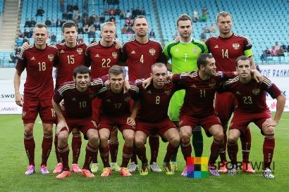
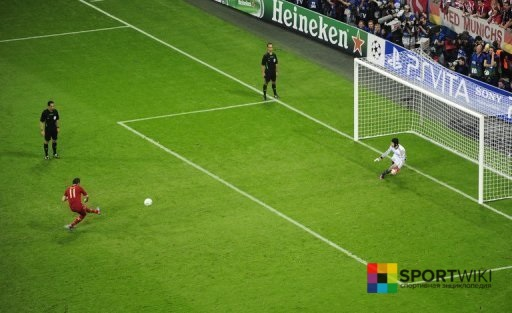
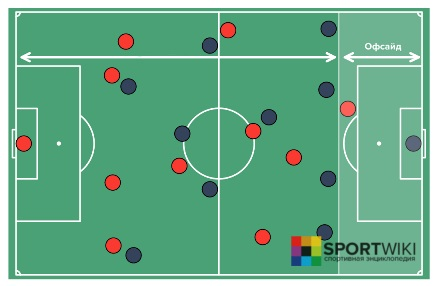
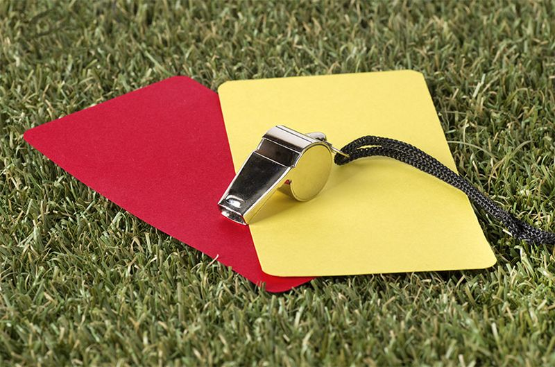
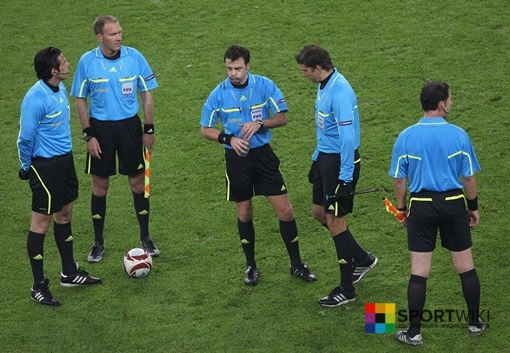

Правила игры
Первые правила игры в футбол были введены 7 декабря 1863 года Футбольной ассоциацией Англии. Сегодня правила футбола устанавливает Международный совет футбольных ассоциаций (IFAB), в который входят ФИФА (4 голоса), а также представители английской, шотландской, североирландской и валлийской футбольных ассоциаций.
Каждая футбольная команда должна состоять максимум из одиннадцати игроков (именно столько может находиться одновременно на поле), один из которых вратарь и он же единственный игрок, которому разрешено играть руками в рамках штрафной площади у своих ворот.
Футбольный матч состоит из двух таймов длительностью по 45 минут каждый. Между таймами предусмотрен 15 минутный перерыв на отдых, после которого команды меняются воротами. Это делается для того, чтобы команды были в равных условиях.
Футбольную игру выигрывает команда, забившая большее количество голов в ворота соперника.
Если команды закончили матч с одинаковым счетом голов, то фиксируется ничья, или назначаются два дополнительных тайма по 15 минут. Если дополнительное время закончилось ничьей, то назначается серия послематчевых пенальти.
Пенальти в футболе
Одиннадцатиметровый удар или пенальти является самым серьезным наказанием в футболе и выполняется с соответствующей отметки. При выполнении 11-метрового удара в воротах обязательно должен стоять вратарь.
Пробитие послематчевых пенальти в футболе проходит по следующим правилам: команды проводят по 5 ударов по воротам соперника с расстояния 11 метров, все удары должны проводиться разными игроками. Если после 5 ударов счет по пенальти равный, то команды продолжают пробивать по одной паре пенальти, пока не будет выявлен победитель.
Положение «вне игры» в футболе
Считается, что игрок находится в положении «вне игры» или в офсайде, если он находится ближе к линии ворот соперника, чем мяч и предпоследний игрок соперника, включая вратаря.
Для того чтобы не оказаться в офсайде, игрокам необходимо придерживаться следующих правил:
- запрещается получать преимущество благодаря своей позиции (касание мяча, который отскакивает от стойки или перекладины ворот или от соперника);
- запрещается мешать сопернику;
- запрещается вмешиваться в игру (касание мяча, который ему передали или который коснулся партнёра по команде)
Игра рукой в футболе
Футбольные правила позволяют полевым игрокам касаться мяча любой частью тела, кроме рук. За игру рукой команде назначается штрафной удар или 11-метровый удар, который выполняет игрок команды соперника.
К правилам игры рукой в футболе относятся ещё два очень важных пункта:
- случайное попадание мяча в руку не является нарушением правил;
- инстинктивная защита от мяча не является нарушением правил.
Желтая и красная карточки
Желтая и красная карточки представляют собой знаки, который демонстрирует судья игрокам за нарушение правил и неспортивное поведение.
Желтая карточка носит предупредительный характер и дается игроку в следующих случаях:
- за умышленную игру рукой;
- за затяжку времени;
- за срыв атаки;
- за удар до свистка / выход из стенки (штрафной удар);
- за удар после свистка;
- за грубую игру;
- за неспортивное поведение;
- за споры с арбитром;
- за симуляцию;
- за уход или вход в игру без разрешения арбитра.
Красная карточка в футболе демонстрируется судьей за особо грубые нарушения или неспортивное поведение. Игрок, получивший красную карточку, должен покинуть поле до конца матча.
Стандартные положения в футболе
- Начальный удар. Розыгрыш мяча в футболе производится в трех случаях: в начале встречи, в начале второго тайма и после забитого гола. Все игроки команды, производящей начальный удар, должны находиться на своей половине поля, а их соперники — на расстоянии не меньше девяти метров от мяча. Игрок производящий начальный удар не имеет права повторно коснуться мяча раньше, чем это сделают другие игроки.
- Удар от ворот и введение мяча в игру вратарем. Ввод мяча в игру после его ухода за линию ворот (сбоку от стойки или над перекладиной), по вине игрока атакующей команды.
- Вбрасывание мяча из-за боковой линии. Производится полевым игроком после того, как мяч пересек боковую линию и покинул пределы поля. Вбрасывать мяч надо с того места, где он оказался в «ауте». Игрок, выполняющий прием, должен стоять лицом к полю на боковой линии или за ней. В момент броска, обе ступни игрока должны касаться земли. Мяч вводится в игру без сигнала судьи.
- Угловой удар. Ввод мяча в игру из углового сектора. Является наказанием для игроков обороняющейся команды, выбивших мяч за линию ворот.
- Штрафной и свободный удары. Наказание за умышленное касание мяча рукой или применение грубых приемов против игроков команды соперника.
- Одиннадцатиметровый удар (пенальти).
- Положение «вне игры» (офсайд).
Судейство в футболе
Судьи следят за соблюдением установленных правил на футбольном поле. На каждый матч назначается основной судья и два помощника.
В обязанности судьи входит:
- Остановить, временно прервать или прекратить матч при любом нарушении правил, постороннем вмешательстве, травмировании игроков;
- Принимать меры в отношении официальных лиц команд, ведущих себя некорректно;
- Продолжить игру до момента, когда мяч выйдет из игры в случае, если игрок, по его мнению, получил лишь незначительную травму;
- Продолжить игру, когда команда, против которой было совершено нарушение, получает выгоду от такого преимущества (осталась с мячом), и наказать за первоначальное нарушение, если предполагавшимся преимуществом команда не воспользовалась;
- Наказать игрока за более серьёзное нарушение Правил в случае, когда он одновременно совершает более одного нарушения;
- Действовать на основании рекомендации своих помощников и резервного судьи.